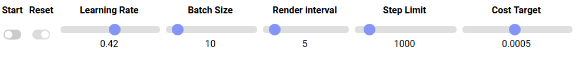
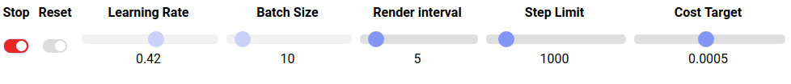

ML - Your mileage may vary
Explaining machine learning concepts through an interactive application
TL;DR
There are lots of myths about machine learning but we believe that the best way to understand machine learning concepts is by playing with real, or quasi real, machine learning applications. In this post we describe, and show you, an interactive web application where you can train a deep learning model, change its parameters, see it converge (or not!), start over and play as much as you want with some of the model parameters. Hopefully you will develop some insights about machine learning after playing with the application. By the way, the parameters of the demo are a bit off to start with, so it is up to you to improve them! Before you delve into the demo, notice that the algorithm is trying to predict the complementary colors of a given color. There is an explanation of the visuals here, but we are sure that you will bet able to get it as you play along. Let's play
The not so long road...
On a conversation with a longtime friend a couple of months ago I had to answer the perennial question: "What are you doing these days?". This wouldn't be much of a conversation topic a few years back, when I was deeply entrenched in the Enterprise Content Management industry. My friend would shrug and the conversation would move on to another, hopefully interesting, topic. But these days, I'm doing Data Visualization in Machine Learning. More specifically, visual explanations for deep learning neural networks. To my friend this was a mouthful, but an interesting one.
It struck me, during this conversation, that my friend didn't really understood what machine learning is about. There is a large spectrum of myths surrounding artificial intelligence, some stemming from news about its most recent achievements, but a good fraction of these myths come almost verbatim from the pages of Clifford Simak
We found out that a common difficulty in understanding machine learning applications arise from a simple misconception about the very framework of a machine learning application. Most people look at the field through the lenses of a traditional application, where data is fed to an algorithm that produces an answer.

To grok machine learning applications you must understand how they come to life in the first place: you feed a BIG amount of data to a Machine Learning training algorithm and it produces, as output, an algorithm for you. This output is the very algorithm that will later take data as input and produce an answer for you.

We realized that if we tried to explain neural networks from the ground up, starting with the concept of the McCulloch/Pitts

But if you don't explait machine learning from ground up, then how do you explaint it at all? We start with an analogy to machine learning training and then let you play with a machine learning training algorithm, to better understand how it works..
The analogy
Suppose that you are at the bottom of an empty pool.

The pool above has water in it, but you got the gist of it. Now, suppose that each tile of the pool is connected to another tile, but you don't know how the tiles are connected! At this juncture, if someone asks you what tile is connected to tile X, for example, the best you can do is move around randomly in the pool and stop over a particular Y tile. As you are an algorithm with a bit of responsability, if someone asks you again about the same X tile, you will produce the same Y answer. For every tile in the pool, you can walk to another corresponding tile but, as you are a machine learning algorithm without training, you will produce bogus answers, but answers you will produce!
Now suppose that you are given set of n tiles pairs. You can then use these pairs to correct your routes. You try every one of the tiles you've got and you will adjust all your routes at the same time (you cannot change just one route, any change you make affect all your routes!), trying to minimize the error in the tile pairs you've got as input. The idea is that if you can make a good guess on the tiles you saw, there is a chance that you will be able to make a good guess on the tiles you never saw! Now, you can adjust the routes in baby steps, changing the routes just a little bit, while trying to improve the routes you know the answers to, or you can adjust the routes in big steps, changing your routes a lot, or you can do something in between these two extremes. Every time you get a tile list, you adjust the routes again, but when will you stop this training process? Maybe you will stop after training for 1.000 rounds, when your data has finished, or you will stop when the error in the routes you got is smaller then a certain value. It is up to you.
If you are still following us, then you, hopefully, understood what were you doing inside the pool. We can now throw a bit of nomenclature:
- Learning Rate: Is the amount of change you make on each pass. Big changes correspond to high learning rate, small changes correspond to small learning rate. If the learning rate is too big, you may never be able to correct the routes. If the learning rate is too small, it may take very long to properly correct the routes.
- Batch Size: Is the amount of tiles pairs you get at each turn. The bigger the batch size, the better your adjustmens, but you will take longer to process them. Remember, though, that you can process the tiles in parallel, so a small batch size can be a bad thing.
- Step Limit: Is the maximum amount of rounds of training that you will go through.
- Cost Limit: Is the minimum error that your routes must have in order to stop the training.
There are another concepts in neural network training, but the for above are the ones you will see at work in the interactive application.
The demo
The application you are going to see was based in one of the tutorials for the late deeplearn.js library (now tensorflow.js, a javascript inception of TensorFlow
We created a D3 visual interface for the CCP tutorial in typescript and later, when deeplearn.js moved to tensorflow.js, we rewrote the whole code and added a bit of interactivity to it.

In the figure above you can see the staring point of the demo. The inner ring of the display is a set of colors that we will use to predict its complementary colors
You can play with the demo using the controls below:

The five sliders on the right let you adjust the values for:
- Learning Rate: The learning rate of your training model. Smaller learning rates are the baby steps that may go in the right direction but will take longer to get to the right prediction, larger learning rates are big strides that may go to the right direction but miss the prediction altogether, by going beyond the expected solution.
- Batch Size: The amount of colors that will be used for training at each round, ranging from 1 to 128. There are drawbacks in small batches and big batches, it is up to the analyst to figure out the best batch size (pun intended).
- Render Interval: The number of rounds between screen updates, ranging from 1 (updating every round) to 50.
- Step Limit: The number of rounds that the training will run, ranging from 25 to 10.0000. If the training reaches this limit it will stop and this slider will be in red, to show that a step limit was reached. If the step limit is too small, the predictions won't be that good (the outer ring colors won't match the middle ring colors).
- Cost Target: The cost target of the predictions, ranging from 0.00005 to 0.001. The training will stop when the cost of the predictions is smaller than the cost target, and the cost target slider will become red, as in the figure below. If the cost is too big, the training may not converge, if the cost is too high, the training may overfit (turning into a very good predictor withthe colors it has seen, but off the mark on the colors it hasn't seen).

In the beginning you can adjust any of the five slides, choosing whatever combination you like. To start to play, click on the start button and watch the colors on the outer ring change, as the training goes on. Each new update shows the predictions of the algorithm to the complementary colors at that stage of the training, and you can compare them with the middle ring. When the training is running, the Start button becomes a red Stop button, as shown in the figure below.

After the train starts, you won't be able to change neither the Learning Rate nor the Batch Size, so choose them wisely. The training may stop for three reasons:
- You clicked on Stop.
- The Step Limit was reached.
- The Cost Target was reached.
If you stopped the training, you can restart it by clicking on start again. If the Step Limit was reached, you can increase the limit and restart the training. If the Cost Target was reached, you can decrease the target and start again. Whenever the training is halted, you can reset it by clicking on the Reset button (notice that the button is disabled when the training is on). A reset will clear all the training (meaning that the model will "forget" the predictions), but will keep the values you chose for the training, for an initial training round. This way you can fine tune the training and explore the impact of each parameter change.
Notice that the initial parameters are not optimal, so you must play with them a little bit before finding a good balance. Try different combinations, play with it and, with luck, you will have some insights on how these parameters influence the training and the model predictions. One important thing to notice about machine learning training is that there is a random effect going on. You will see it in action by running the model with the same parameters more then once, you will not get the same results twice! So what are you doing here ? Let's play!